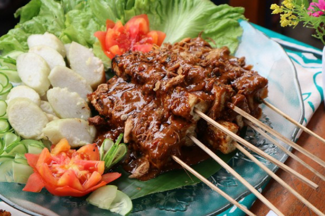

Menu Makanan Warung Mas Zazzu

Sate Kelinci
Sate kelinci dikenal memiliki tekstur yang lebih empuk dan rasa yang cenderung ringan (mirip daging ayam), serta umumnya disajikan dengan bumbu kacang dan lontong

Nasi Padang
Hidangan ini terkenal dengan cita rasa bumbu yang kuat dan gurih, serta cara penyajiannya yang unik di rumah makan Padang, di mana belasan piring berisi lauk langsung ditata di atas meja, memungkinkan pelanggan memilih sesuka hati.

Nasi Megono Khas Pekalongan
Ini adalah nasi hangat yang disajikan dengan lauk berupa megono, yaitu olahan sayur yang terbuat dari nangka muda yang dicincang, dicampur dengan kelapa parut berbumbu rempah-rempah yang dikukus. Rasanya dominan gurih dengan sedikit sentuhan pedas dan aroma rempah yang khas.